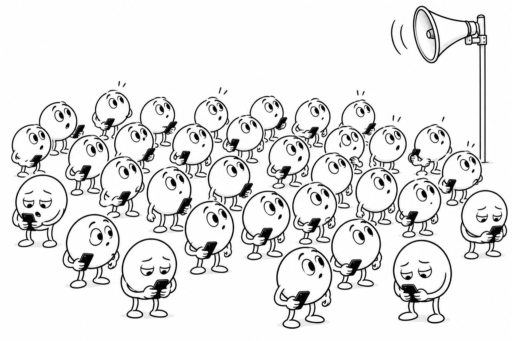

A visual lesson
Attention
How tokens share
information.
Follow the residual stream into attention.
Then work through every number with socks and shoes.
Real model results · Socks and shoes · A numerical classifier

Run the sentences through a trained model
Actual predictions. Actual attention.
DistilBERT, fine-tuned on SST-2, scores both Infinite Jest sentences. This model has six transformer blocks and reads the final [CLS] representation through a classification head. The preceding one-block, mean-pooling diagram is a schematic; it is not this model’s exact architecture.
The saved model results could not be loaded. Reload this page to try again; the complete worked examples continue below.
Inspect another head.
Compare any of the 72 attention heads, then select a destination row to read its exact weights. Each row mixes source representations. These weights are not signed contributions to the sentiment score.
Model: DistilBERT SST-2, pinned checkpoint. Download every saved attention matrix and prediction. Reproduce the model run.
A worked classifier
Attention, pooling, and classification
This separate three-token model isolates the arithmetic. It has no residual path or MLP; its classifier reads the mean of the attention outputs directly.
Using attention in research
What can we learn from the output?
An attention heatmap describes a particular computation: for one head, in one layer, each destination forms a weighted mixture of source value vectors. A large weight tells us that the source receives a large mixing coefficient. Its effect on a particular classification also depends on the value vector and everything that follows.
The opening schematic uses two sentences to motivate the task. The following DistilBERT chapter reports measured predictions and attention weights for those exact sentences. The residual path preserves each token’s representation while attention and the position-wise MLP add updates. A sentiment readout uses the final token representations. The numerical example removes those extra paths to make one exact decomposition possible.
That makes attention useful for investigating the relationships a model has learned. For example, Clark et al. (2019) found BERT heads associated with syntactic relations and coreference. Such patterns can suggest what to inspect or test next. A pattern across token positions and an explanation of a particular sentiment score answer different questions.
The three-token numerical example produces one output vector per token: the rows of . Mean pooling turns those three rows into a sentence summary, , where . These effective source weights are the column means of , computed across all destinations.
A linear classifier reads the summary as . With token vectors stored as rows, is a column. The positive-class probability is .
Here is an exact signed term in this forward pass. A large effective source weight need not produce a large term, and a nonnegative weight can multiply evidence against the class. These terms add to the logit after including the intercept; they do not add to the probability. A separate linear output map can be absorbed into . Nonlinear layers require further analysis.
Choose the question before the visualization
| Question | Useful display | Interpretation |
|---|---|---|
| Where is information being read? | A named layer, head and destination row of attention | Mixing coefficients for source representations. |
| What adds to this class score? | Signed output terms, when the architecture permits an exact decomposition | Contributions to this computation, including values and the readout. |
| Which words change this prediction? | Replace or remove a word or phrase, rerun the whole model, and compare a fixed class score | Sensitivity to that particular text edit. |
| What caused an outcome outside the model? | An experiment or an identified causal design | A different question that attention weights alone do not answer. |
A useful sentiment exercise
Begin with a fixed target, such as the positive-class logit, and show the original prediction. Compare “the film was awful” with “the film was great”; then compare “the film was good” with “the film was not good.” Rerun the classifier on each complete sentence. These further edits are proposed checks for a trained model. The DistilBERT chapter reports measured results for the Infinite Jest sentences; the three-token example uses hand-constructed parameters.
Put the chosen attention row beside the score changes and ask whether its highlighted positions help explain them. Inspect negation as a phrase: in a deep transformer, the representation at “good” may already contain information from “not.” Removing a token also changes the context, positions, and potentially every attention row. It does not isolate a unique contribution inherent to that word.
Integrated gradients can provide a signed attribution to a chosen output relative to a specified baseline; SHAP requires a specified treatment of missing features. Both address questions that a raw attention heatmap leaves open, and both need their own interpretation. For an introductory exercise, a small set of meaningful text edits makes the contrast easier to inspect. See Sundararajan et al. (2017) and Lundberg and Lee (2017).
From words to marketing touchpoints
LiDDA predicts conversion from a sequence of marketing interactions and uses aggregated, normalized attention to assign relative touchpoint credit. Its single attention layer and flattened readout are deliberate design choices. The paper also reports sensitivity checks, comparison with incremental propensity, MMM calibration, and email experiments. These provide evidence beyond the attention visualization itself. LiDDA v3, §§2.1, 2.4, 2.7, 3.2 and Appendix B.2.
A 40% credit share is a model-based allocation within a path. It is not automatically a 40% change in conversion probability or a 40% causal effect. Our sentiment model illustrates the interpretive distinction; it is not a reconstruction of LiDDA.
A technical qualification about LiDDA
The paper describes aggregation across heads and normalization, but does not fully specify how its query-by-source attention tensor reduces to one credit per touchpoint. We therefore do not present the sentiment model’s exact computation as LiDDA’s implementation.
What to remember about Q, K and V
A query is what a destination is matched on; a key is what each source is matched on; a value is what that source contributes to the mixture. In a trained transformer, these projections are learned from the training task. “Looking for” is an analogy, not a claim that their coordinates have human-readable meanings. Learn the flow from matching to mixing to prediction first. The full calculation follows below.
Build one attention head
Socks and shoes
Follow every number from input vectors through Q/K matching, values, and a prediction. Then project an update back into the residual stream and examine a causal mask.
Keep the two operations in view
Choose where to read.
Choose what to carry.
Queries and keys determine a distribution over source positions. Values determine the information those positions contribute. The output at each destination is a weighted sum of the source values.
When the attention output is used to update a representation, an output map returns it to the input width before addition:
Notation for this lesson
The opening uses for the value projection and for the output projection. They are the same two maps in our earlier expression:
Each row of is a source value vector; each row of is a weighted mixture at a destination. Neither is an outcome label. The update has the same shape as , so it can be added to the residual stream. These schematic equations omit attention biases and normalization.
Tokens are rows of . Query and key maps have shape ; the value map has shape . Thus and . The output map for a representation update is . A subscripted token vector denotes a row throughout.
The full Q/K/V calculation follows one constructed socks-and-shoes head. First, it matches a destination to a source and mixes position values to produce a task score. Then we generalize the scalar query–key calculation, show how its output can update a representation, and change the setting to left-to-right prediction with a causal mask. The original task has access to both items; its target scores are not claims about the later masked calculation. The parameters are chosen to make every step inspectable.
The exact socks-and-shoes model
The target is 0 for socks before shoes and −1 for shoes before socks. Each input row contains a socks indicator, a shoes indicator, and a position value: +1 in the first slot and −1 in the second. This is a constructed model with fixed parameters, not a pretrained language model.
We form by adding token embeddings and position vectors of the same width. Position embeddings can be learned without reserving a coordinate. For this example, we choose fixed vectors: the token embeddings are zero in the third coordinate, and the position vectors are zero in the first two. We follow this one construction through the calculation.
Queries and keys read token identity; values carry position. With , the score matrix is . Shoes assigns 75% to socks and 25% to itself. The socks row is uniform. All weights come from finite softmax scores.
Swapping the token order preserves the identity-based matching rule while changing which position is carried by each token. The mean output changes from +0.25 to −0.25, giving predictions 0 and −1. Removing positional information or using uniform attention gives −0.5 for both orders. This exact solution covers the two sequences shown; it does not demonstrate generalization to arbitrary clothing sequences.
From a constructed head to a pretrained model
A useful next step is Neel Nanda’s pretrained one-layer attention-only model. Its configuration has eight parallel attention heads and no feed-forward network in the layer. Embeddings, positional information, normalization, and a prediction readout remain. One layer need not mean one head.
The current lesson computes its constructed examples in the browser. It does not display measurements from that checkpoint or GPT-2. Those models can provide a later comparison using actual tokenization, attention weights, and continuation probabilities.
Sources and conventions
Goro Kobayashi and colleagues (2020), Attention is Not Only a Weight, motivates examining transformed values as well as attention weights. Samira Abnar and Willem Zuidema (2020), Quantifying Attention Flow in Transformers, explains why repeated mixing complicates attribution to original input tokens.
Ashish Vaswani and colleagues (2017), Attention Is All You Need, §3.2, defines the matching and weighted-value operation. Sarthak Jain and Byron Wallace (2019), Attention is not Explanation, and Sarah Wiegreffe and Yuval Pinter (2019), Attention is not not Explanation, motivate testing an explanation against the architecture and prediction behavior. Their disagreement is useful: attention can be diagnostic without every heatmap being a faithful word-importance explanation.
The exact sentiment construction and its limits
The numerical example uses a self-attention classifier with three tokens, mean pooling, and a linear readout. All parameters are hand chosen. Rows and columns of the attention matrix follow the order [film, was, awful]:
Each row is a destination’s distribution over sources. The rows sum to one; the matrix is not symmetric, and its columns need not sum to one. To realize these weights with scaled dot-product attention, set , , and , where the logarithm is applied to each entry. Then , whose row-wise softmax is exactly .
Each row of is an attention output at one token position. Mean pooling gives . Equivalently, , with effective source weights . Here the column means are .
Replacing awful with great changes only the last value’s first coordinate to +8, giving . Keeping its query and key fixed is an explicit toy assumption, so the entire attention matrix is unchanged. A trained model may change queries, keys, and values.
Deleting film removes its destination row and source column. The remaining query, key, and value vectors keep their original coordinates, including the query/key dimension of three. Recomputing softmax makes both surviving attention rows (.75, .25). Each output row becomes (−2, 1.25), so their mean gives logit −2. This change cannot be read from film’s original +.06 term. Real-model edits must recompute the entire forward pass. At later layers, source values may already include information from other input tokens; source-position terms therefore need not be original-word attributions.
Nelson Elhage and colleagues (2021), A Mathematical Framework for Transformer Circuits, especially “Attention Heads as Information Movement,” the QK/OV decomposition, and the tensor-product appendix. The distinction between moving information across positions and transforming it within each position motivates this lesson.
Simon J. D. Prince (2023), Understanding Deep Learning, chapter 12, §§12.2–12.3, equations 12.6–12.9. Prince stores tokens as columns. We transpose the convention: projection matrices multiply from the right, attention multiplies from the left, and softmax normalizes each row. The paper’s per-token maps likewise transpose when translated into this convention.
Additional visual reference: Grant Sanderson, Attention in transformers, step-by-step. Its emphasis on what information a destination seeks and how values change a representation informs this sequence. That lesson uses column vectors; this one retains tokens as rows.
The QK and OV products in our row convention
Writing gives scores . Including the output map gives and a head contribution . These product orders differ from the column-vector definitions in the Transformer Circuits paper; they express the same operations after transposition.
Several heads can perform different mixtures in parallel. With their output maps included, their contributions add: . Each head follows the mechanism shown here.
From an attention output to a representation update
The socks-and-shoes task reads its score directly from . For the update illustration, choose . This maps each scalar output into three features before adding it to the original input row.
For socks first, the shoes row changes from to . The updated coordinates need no longer have the meanings of the original input features. This socks-and-shoes illustration covers the attention contribution and residual addition. The main opening also shows the MLP update and sentence readout.